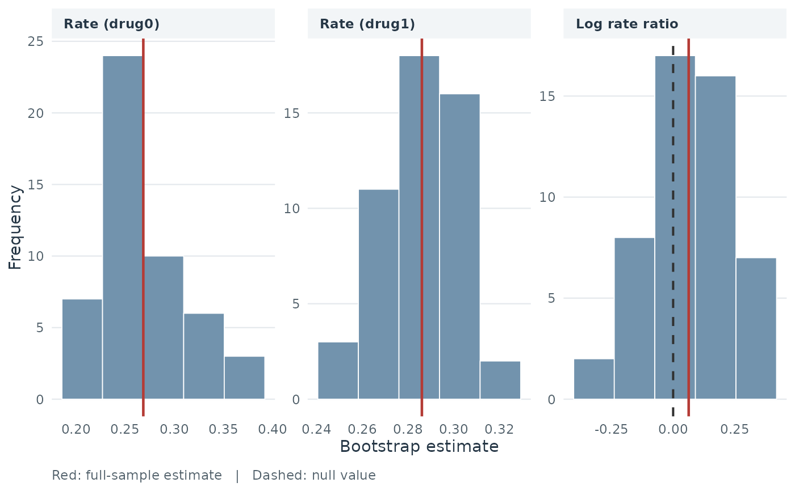
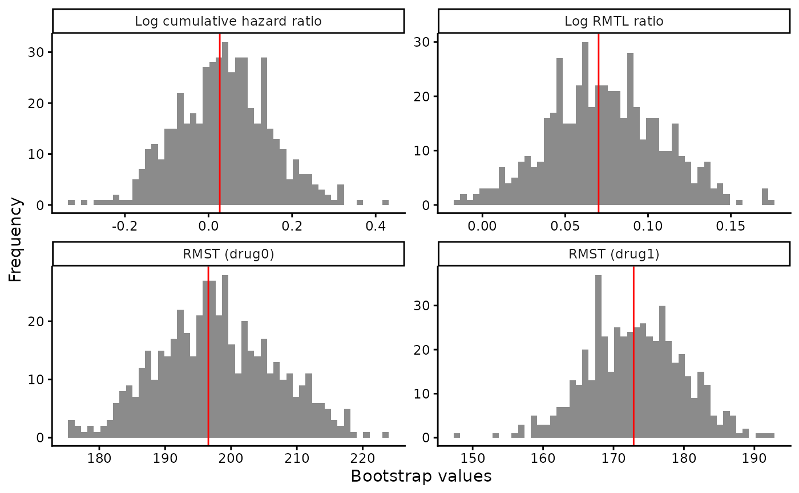

Estimate average treatment effects for binary, count and survival outcomes
Source:R/ATE.R
atefit.RdDoubly robust average treatment effect estimation for two treatments. The effect is a risk difference for binary outcomes, a rate ratio for count outcomes, or a restricted mean time lost ratio for survival outcomes. Bootstrap resampling is used for inference. Continuous outcomes are not yet implemented.
Usage
atefit(
response,
data,
outcome_model,
outcome_method = NULL,
ps_model,
ps_method = "glm",
censoring_model = NULL,
censoring_method = "breslow",
minPS = 0.01,
maxPS = 0.99,
followup.time = NULL,
tau0 = NULL,
surv.min = 0.025,
n.boot = 500,
seed = NULL,
verbose = 0,
rmst.control = list(),
ps.control = list(),
...
)Arguments
- response
A string describing the type of outcome in the data. Allowed values include "binary" (see
atefitbinary), "count" (seeatefitcount), and "survival" (seeatefitsurv). Continuous outcomes are not yet implemented.- data
A data frame containing the variables in the outcome, treatment, and censoring models (if specified); a data frame with
nrows (1 row per observation).- outcome_model
A formula specifying the outcome and baseline covariates for the outcome model. Supply treatment in
ps_model, rather than in this formula. Seeatefitbinary,atefitcount, oratefitsurvfor the outcome-specific model and formula requirements.- outcome_method
Outcome-model method. The default
NULLselects"logistic"for binary outcomes,"poisson"for count outcomes, and"coxph"for survival outcomes. Count outcomes also support"negative_binomial"(alias"negbin"); survival outcomes also support"weibull"and"log_normal"(alias"lognormal"). Other methods are not currently available. See the outcome-specific help pages for details.- ps_model
A formula describing the treatment model (propensity-score model) to be fitted. The treatment must appear on the left-hand side. For binary outcomes, logical treatment values
FALSEandTRUEare mapped to 0 and 1, respectively. Numeric 0/1 values or two distinct treatment labels are also accepted. If data are from a randomized controlled trial, specifyps_model = trt ~ 1as an intercept-only model.- ps_method
A character value for the method to estimate the propensity score. Allowed values include one of:
'glm'for logistic regression with main effects only (default), or'lasso'for a logistic regression with main effects and LASSO penalization on two-way interactions (added to the model if interactions are not specified inps_model). Relevant only whenps_modelhas more than one variable.- censoring_model
A formula describing the censoring model used for inverse probability of censoring weighting (IPCW). The left-hand side must be empty. Only applies for survival outcomes. Default is
NULL, which uses a censoring model with the same covariates as the outcome modeloutcome_model, plus the treatment.- censoring_method
A character value for the censoring model. Only applies for survival outcomes. Allowed values are:
'breslow'(Cox regression with Breslow estimator of t he baseline survivor function),'aft (exponential)','aft (weibull)','aft (lognormal)'or'aft (loglogistic)'(accelerated failure time model with different distributions for y variable). Default is'breslow'.- minPS
A numerical value (in `[0, 1]`) below which estimated propensity scores should be truncated. Default is
0.01.- maxPS
A numerical value (in `(0, 1]`) above which estimated propensity scores should be truncated. Must be strictly greater than
minPS. Default is0.99.- followup.time
A column name in
dataspecifying the maximum follow-up time, interpreted as the potential censoring time. Only applies for survival outcomes. Default isNULL, which corresponds to unknown potential censoring time.- tau0
The truncation time for defining restricted mean time lost. Only applies for survival outcomes. Default is
NULL, which corresponds to setting the truncation time as the maximum survival time in the data.- surv.min
Lower truncation limit for the probability of being censored. It must be a positive value and should be chosen close to 0. Only applies for survival outcomes. Default is
0.025.- n.boot
A numeric value indicating the number of bootstrap samples used. Default is
500.- seed
An optional integer specifying an initial randomization seed for reproducibility. Default is
NULL, corresponding to no seed.- verbose
An integer value indicating whether intermediate progress messages and histograms should be printed.
1indicates messages are printed and0otherwise. Default is0.Binary outcomes use
response = "binary"and estimate a doubly robust risk difference (treatment 1 minus treatment 0) with logistic outcome models. The result includesrisk.difference,risk0,risk1, and bootstrap estimates. If any bootstrap fit fails, inference is unavailable.- rmst.control
Named options for Cox restricted mean survival integration. Supported entry:
solver = "C"(default) orsolver = "R". The C backend accumulates each patient's integral without allocating a patient-by-event-time matrix. Cox model fitting is unchanged. Applies only to Cox survival outcome models; parametric outcome models use closed-form integration. Independent ofcontrast.control.- ps.control
Named options for LASSO propensity-score interaction screening. Supported entry:
solver = "C"(default) orsolver = "R". Only affects screening whenps_method = "lasso"; the LASSO fit and interaction selection rule are unchanged. Kept separate from boosting's...and other numerical controls.- ...
Additional arguments passed to the outcome-specific function. Also accepts the deprecated named argument
cate.modelas an alias foroutcome_model, with a warning. Supply only one of these arguments. The deprecated aliasesps.modelandps.methodare also accepted with warnings; useps_modelandps_methodinstead. The deprecated survival argumentsipcw.modelandipcw.methodare accepted with warnings as aliases forcensoring_modelandcensoring_method, respectively.
Value
An object of class atefit. The result contains
outcome-specific estimates and bootstrap results. For binary outcomes,
risk.difference is the treatment 1 minus treatment 0 risk difference,
and risk0 and risk1 are the treatment-specific risks. For
count outcomes, log.rate.ratio is the log rate ratio (treatment 1
over treatment 0), and rate0 and rate1 are the estimated
rates. For survival outcomes at tau0, rmst0 and
rmst1 are restricted mean survival times; log.rmtl.ratio,
log.cumulative.hazard.ratio, risk0, risk1, and
risk.difference report the population-average treatment contrasts
and risks at the horizon. Ratios compare treatment 1 with treatment 0 and
the risk difference is treatment 1 minus treatment 0. Estimates are stored
in data frames; effect estimates include bootstrap standard errors, Wald
95% confidence intervals and p-values. Survival treatment-specific estimates
also include inference, whereas binary risks and count rates contain point
estimates only.
The object also contains n.boot, trt.boot (bootstrap
estimates), risk.boot for binary outcomes or rate.boot for
count outcomes, treatment.labels, bootstrap.diagnostics, and
overlap.diagnostics. Count and survival results may also contain a
warning with the treatment-recoding message.
Details
For binary response, see atefitbinary().
For count response, see details in atefitcount().
For survival response, see details in atefitsurv().
Failed or non-finite bootstrap estimates are recorded in
bootstrap.diagnostics, with replicate number, affected measure and
reason. A warning summarizes failures; inference for each affected measure
is unavailable rather than based on a subset of replicates. See also
diagnostics() to inspect these records.
Working with atefit objects
print(fit)displays estimates and treatment-specific outcomes.coef(fit)extracts treatment effects on their estimation scale;confint(fit, level = 0.95)computes Wald confidence intervals using stored bootstrap standard errors. Exponentiate log-ratio estimates and interval limits to obtain ratios; risk differences remain on their original scale. Seeatefit-extract.plot(fit)displays bootstrap distributions; seeplot.atefitfor options.diagnostics(fit)reports recorded messages and bootstrap failures;diagnostics(fit, type = "propensity")summarizes treatment-model overlap and weights. Seediagnostics.
References
Hoogland, J., IntHout, J., Belias, M., et al. (2021). A tutorial on individualized treatment effect prediction from randomized trials with a binary endpoint. Statistics in Medicine, 40(26), 5961–5981. doi:10.1002/sim.9154
Author
Thomas Debray tdebray@fromdatatowisdom.com
Xiaotong (Phoebe) Jiang xiaotong.phoebe.jiang@gmail.com
Examples
# Count outcome
output <- atefit(response = "count",
data = countExample,
outcome_model = y ~ age + female + previous_treatment +
previous_cost + previous_number_relapses +
offset(log(years)),
ps_model = trt ~ age + previous_treatment,
n.boot = 50,
seed = 999)
#> Variable trt was recoded to 0/1 with drug0->0 and drug1->1.
#>
output
#> Average treatment effect:
#>
#> estimate SE CI.lower CI.upper pvalue
#> log.rate.ratio 0.06311746 0.1624482 -0.2552752 0.3815101 0.6976173
#>
#> Estimated event rates:
#>
#> estimate
#> rate1 0.2860635
#> rate0 0.2685660
#>
#> Variable trt was recoded to 0/1 with drug0->0 and drug1->1.
plot(output)

# \donttest{
# Survival outcome
tau0 <- with(survivalExample,
min(quantile(y[trt == "drug1"], 0.95), quantile(y[trt == "drug0"], 0.95)))
output2 <- atefit(response = "survival",
data = survivalExample,
outcome_model = survival::Surv(y, d) ~ age + female +
previous_cost + previous_number_relapses,
ps_model = trt ~ age + previous_treatment,
tau0 = tau0,
seed = 999)
#> Variable trt was recoded to 0/1 with drug0->0 and drug1->1.
#>
output2
#> Average treatment effect:
#>
#> estimate SE CI.lower CI.upper
#> log.rmtl.ratio 0.07015530 0.03420455 0.003115612 0.13719499
#> log.cumulative.hazard.ratio 0.02697948 0.11278450 -0.194074071 0.24803303
#> risk.difference 0.00663013 0.02722418 -0.046728282 0.05998854
#> pvalue
#> log.rmtl.ratio 0.04026192
#> log.cumulative.hazard.ratio 0.81094068
#> risk.difference 0.80758842
#>
#> Estimated event risks at tau0:
#>
#> estimate SE CI.lower CI.upper pvalue
#> risk1 0.8908200 0.01931669 0.8529600 0.9286800 0
#> risk0 0.8841899 0.01555998 0.8536929 0.9146869 0
#>
#> Estimated RMST:
#>
#> estimate SE CI.lower CI.upper pvalue
#> rmst1 172.8609 6.774625 159.5829 186.1389 0
#> rmst0 196.5603 8.904742 179.1073 214.0132 0
#>
#> Variable trt was recoded to 0/1 with drug0->0 and drug1->1.
plot(output2)

# }